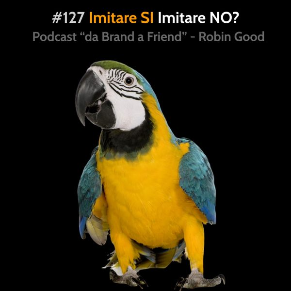

Imitare SI, Imitare NO

*Imitare SI, Imitare NO
Imitare, emulare, ripetere quello che fanno gli altri, non ha nulla a che fare con il copiare.
Copiare è il metodo naturale, sano ed efficace, per poter apprendere qualsiasi cosa.
Imitare è invece il seguire un modello, un modo di fare, uno schema, non con lo scopo di apprendere, ma con lo scopo di ottenere lo stesso status di ciò che viene imitato.
In particolare, l’imitare è relativo soprattutto alle apparenze, alle sembianze di qualcosa, ma non al fare propri i meccanismi, i dettagli e le conoscenze che producono quel risultato.
Per questo penso che imitare sia equivalente al “mettere su una facciata”, mentre il copiare sia l’effettiva capacità di replicare qualcosa, avendone appreso i meccanismi intrinsechi più dettagliati.
Ne consegue che, con le dovute eccezioni, non ho grande simpatia per chi imita (nonostante siano la stragrandissima maggioranza), ma apprezzo invece molto chi copia con cura e attenzione con lo scopo specifico di apprendere, e non con quello di farsi bello, di apparire o spacciarsi per qualcun altro in maniera indebita.
Soprattutto riconosco nell’imitare un abbandonarsi alla superficialità, al fare una cosa semplicemente perché “tutti gli altri” fanno così.
Questo è uno spreco totale delle nostre facoltà e potenzialità creative e ci insabbia in comportamenti e modi di fare, che spesso contraddicono i nostri principi etici e morali, con il solo vantaggio di uniformarci al gregge che ci circonda (quando il nostro scopo dovrebbe essere esattamente il contrario).
.
.
Morale della favola:
Imitare, senza aver consapevolmente analizzato le ragioni e la validità di un certo comportamento o approccio, così come le sue finalità, può essere un comportamento deleterio, negativo, persino distruttivo.
Imitare i comportamenti e modi di fare degli altri, nel promuoversi, nel fare marketing, nel proporre i propri prodotti e servizi, non è frequentemente la scelta migliore.
Ogni situazione, prodotto, mercato ha le sue caratteristiche ed esigenze.
Imitare l’approccio di altri, che non hanno le tue stesse caratteristiche e finalità, preoccupandosi più delle apparenze e delle sembianze che non del capire le logiche, i motivi e le ragioni dietro l’approccio, può spesso portare a risultati controproducenti e ad allontanare la possibilità di raggiungere rapidamente i propri obiettivi.
Imitare ha senso quando si è indagato e appreso il perché e il senso del comportamento / approccio che si vuole adottare, e quando tale adozione serve specificamente a raggiungere i propri specifici obiettivi e ambizioni.
.
.
.
.
-------------
Info Utili
• Musica di questa puntata:
"Keep on going" by Joakim Karud - disponibile su Bandcamp:
https://birocratic.bandcamp.com/track/nesting
• Dammi feedback:
critiche, commenti, suggerimenti, idee e domande unendoti al gruppo Telegram https://t.me/@RobinGoodPodcastFeedback
• Ascolta e condividi questo podcast:
https://gopod.me/RobinGood
• Diventa sostenitore:
sostieni il lavoro di Robin Good e tutti i contenuti e risorse utili che condivide costantemente
https://Patreon.com/Robin_Good
• Seguimi su Telegram:
https://t.me/RobinGoodItalia
(tutti i miei contenuti, immagini, audio e video in un solo canale)
oppure
https://facebook.com/RobinGoodItalia/
(Pagina Facebook ufficiale)
• Newsletter:
http://robingood.it/toptools-newsletter
• Per info e richieste:
mailto: Ludovica.Scarfiotti@robingood.it